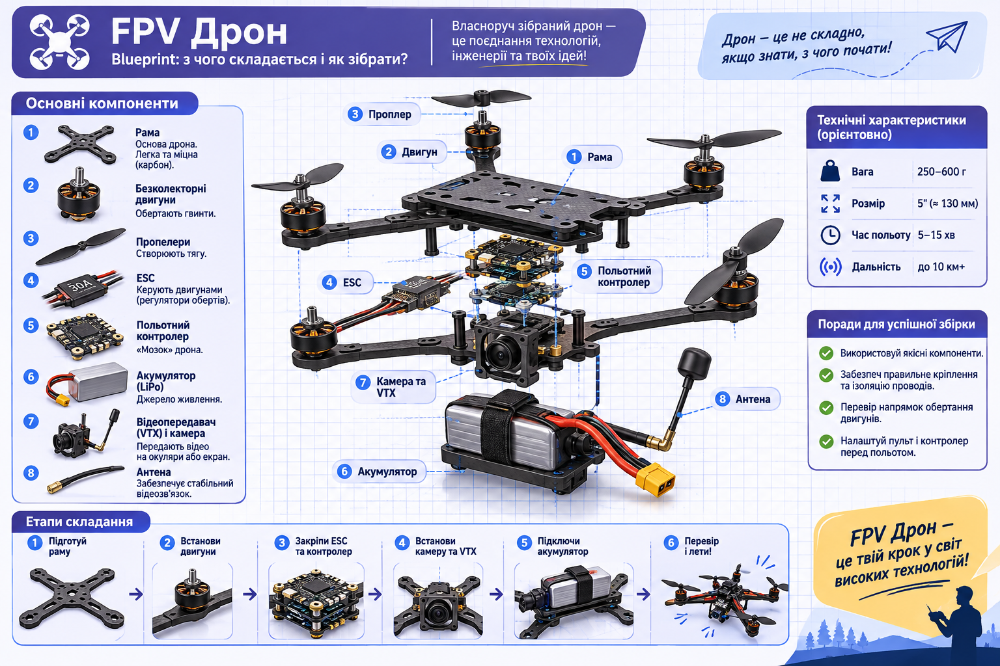

Рама
Основа конструкції, до якої кріпляться компоненти.
Дрон — це система, у якій кожна деталь має свою функцію.

Основа конструкції, до якої кріпляться компоненти.
Створюють обертання для підйому та руху.
Створюють тягу завдяки обертанню.
Обробляє дані сенсорів і стабілізує політ.
Живить електроніку та мотори.
Натисни на компонент, щоб побачити його функцію.